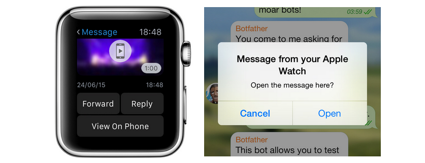

首頁 >
官方新聞 > Apple Watch 上的 Telegram（原文）
｜今天 Telegram iOS 版本更新到 3.0 版，內含機器人平台，專用的貼圖頁籤及我們首次支援 Apple Watch 。
終於！Telegram 到達 3.0 版，並帶有完整的 Apple Watch 支援。在 Apple Watch 中，您可以檢視您最近的聊天和回覆訊息用貼圖、位置、表情符號、預設詞語或命令文字。您還可以檢視用戶和群組資料，開始新的聊天，甚至封鎖用戶。
在您 Apple Watchg 上的聊天將顯示所有 Telegram 中可得到的內容：照片，貼紙，位置，檔案和影片。當遇到手錶無法處理某東西的情況，我們增加了一個捷徑以輕易地在您手機上開啟任何訊息。

我們確信，Apple Watch 上的 Telegram 確實不亞於平台，且現在就有支援了 - 而且它確實比任何其它傳訊應用程式早了一步 。
電報團隊，
2015年6月24日